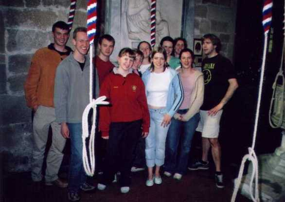
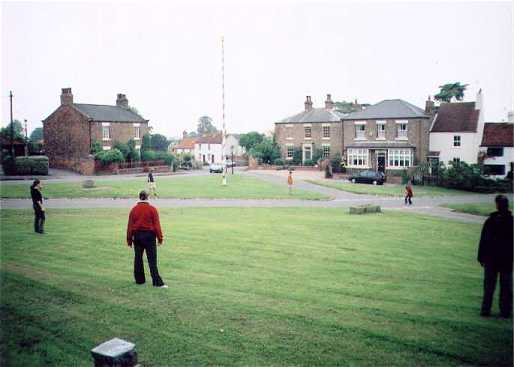
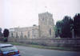
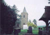
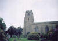
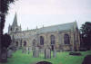
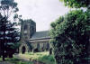
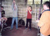
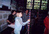

{kind=link}
{kind=link}
{kind=link}
{kind=link}
{kind=link}
 The upmarket minibus
The upmarket minibus
In Kirby Wiske church: from left to right: David Denbigh, Maff Glover, Kevin Atkinson, Helen Edge, Charlotte Lee, Lizzy Usher, Nicci Staves, Rebecca Lane, Charlotte Elkington, Emma Greenhill, Mike Esbester. Taking photo: David Bryant
This year's annual outing was to the Ripon area. We assembled bright and early (well - 9-00 and with no obvious hangovers) in one of the university's car parks. Mike Esbester had fetched the minibus and met us there. This year it was a shiny new one, and had plenty of diesel in its tank. Learning from last year's mistakes, evidently...
We were also met by David Potter in his car, and the two vehicles then headed to Aldborough, the first tower of the day. Arriving half an hour early, the more energetic played frisbee on the village green while the not-so-energetic watched. The lovely village, with its green and maypole, attracted favourable comment.

Playing frisbee on the village green at Aldborough
We arrived at the pretty church at the allotted time, and everybody had chance to ring although some of the less experienced found the relatively long draught a little disconcerting. The creaking floor-board under the 5th and tenor was commented on, and an information panel nearby revealed why there were boards here in the otherwise stone floor: the pendulum of the clock comes down from above in a wooden case against the wall and goes into a six-foot-deep pit in the ground. It is the longest clock pendulum in the country, apparently. Somewhat surprisingly, the innuendo opportunities which a long pendulum offered were entirely missed, even by Emma and Maff.
Most of the ringers then headed for the next tower, while I had a look at the Aldborough bells and David Potter waited (anyone want to see my photos of the bells? No, I thought not...). We then joined the others at Kirby Hill, where it was slightly difficult fitting us all into the small upstairs ringing chamber. These are really good bells from the ringer's point of view - they go very well, have a short draught, and sound very clear and distinct in the ringing chamber. I noticed that a couple of ex-Huntington ropes which we donated on a York outing a couple of years ago were still in use. Members of the church were setting up for a church open day and were very friendly, offering us a cup of tea before we left. Time was short though, so reluctantly we had to decline.
Onwards, and to the only eight of the day at Sharow just outside Ripon, where Graham Blackburn joined us for ringing. The climb to the ringing chamber on the second floor caused some grumbles, and the tonal properties of the bells were debated at some length by myself and Graham. The bells go reasonably well, but feel a lot heavier than they actually are.
There was then much discussion about where to go for lunch, and we walked through the back streets of the village to the local pub, only to find that it was closed! More discussion took place as we retraced our steps, and fortunately Kevin comes from the area we were heading for and recommended the Green Dragon at Exelby. A phone call confirmed that they could accommodate us, and we duly headed there. The food was excellent - definitely a pub worth visiting again.
Then on to Burneston. The church was the finest of the day, an impressive largely Perpendicular structure. The bells have something of a reputation throughout Yorkshire, but I have to say that they didn't go anywhere near as badly as I had been led to believe. Their sound is, shall we say, unusual: they are quite noticeably out-of-tune! The learners managed surprisingly well on what was in some cases their first experience of plain bearings.
David Potter then left due to another engagement, and the rest of the group headed for the last tower, Kirby Wiske. I had high hopes of these having ascertained beforehand that apart from two old bells (4th and tenor) they are a complete Taylor job of 1930. I was not disappointed: they are really nice and were the best bells of the day. The long draught and light trebles proved a little off-putting for some, but they learned to cope. Unfortunately some of the ringing was of the end-of-the day type! Group photos were taken here, and after we had finished ringing we headed back to York.
Thanks to Helen Jonas (who couldn't come due to other commitments) and Nicci for organising the outing, Mike for arranging the hire of and driving the minibus, and the ringers at the towers we visited for the use of their bells.
David Bryant
 Aldborough, St Andrew (GF), 6, 11-1-0 in G
 Kirby Hill, All Hallows, 6, 8-0-14 in Bb
 Sharow, St John the Divine, 8, 12-0-5 in G
 Burneston, St Lambert (GF), 6, 8 cwt in A
 Kirby Wiske, St John the Baptist (GF), 6, 7-3-27 in A
The upmarket minibus
 Ringing at Kirby Wiske
 Nicci
{kind=link}
{kind=link}